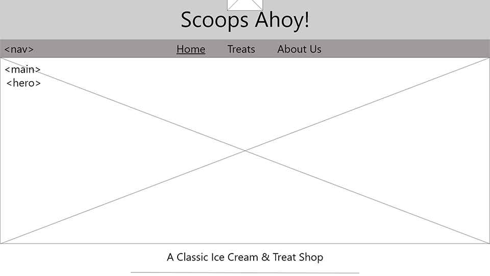
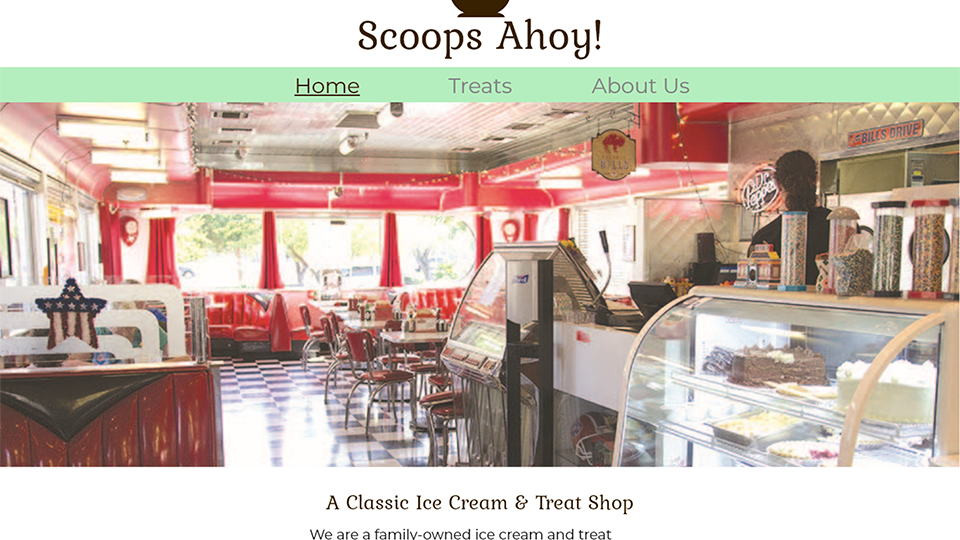

Scoops Ahoy!

The goal of this project was to design and implement a mobile-first website with a focus on proper responsive design and accessibility. Using currently established branding, I designed and mocked-up Scoops Ahoy! starting with a mobile layout and worked my way up to tablet and desktop versions. This project makes use of responsive images, CSS grid, and CSS media queries.
Outline & Process
Before I started any design work for this project I had to collect and organize all the content I would use. This involved finding images, writing text, and playing around with the established branding to create a functional design. I then drew up the wireframes in Adobe XD, which also allowed me to develop a rudimentary protoype.
After wireframing, I mocked up the mobile layouts of the site first. Applying the branding was interesting; the font choices given for headings did not play well in smaller sizes. Working mobile-first is the easiest way to design a site because you trim your content and stylings of excess frills and makes the site more user-friendly in the long run.
Final Result

Click on the image to check out the final version!